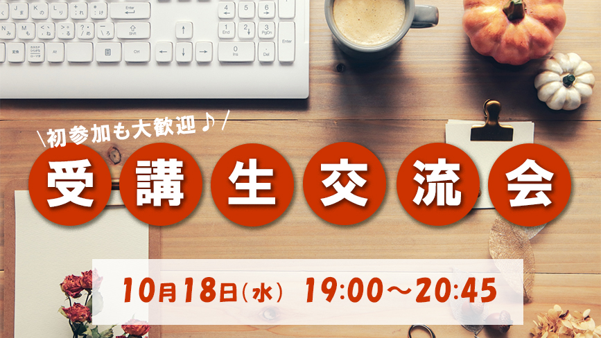

KOJIMA KYOKO
Works
制作物

Design
プログラミングスクールのアイキャッチ
プログラミングスクールに通っている際、「受講生交流会」の記事への誘導と記事への記載のバナー作成を行い、採用された作品です。
「秋 勉強」というキーワードでかわいい印象のバナー作成を行うという課題でしたので、勉強と秋を連想させる背景を選択し、秋らしい落ち着いた赤と白の2色のみを使用することで、デザインがシンプルで見やすくなり、必要な情報がすぐに目に入るように工夫しました。 一番目立たせたい「受講生交流会」という言葉は一文字ずつ丸で囲い、その丸にも文字にも影を入れることで、背景に馴染みながらも目立つようにしています。
使用ツール：photoshop